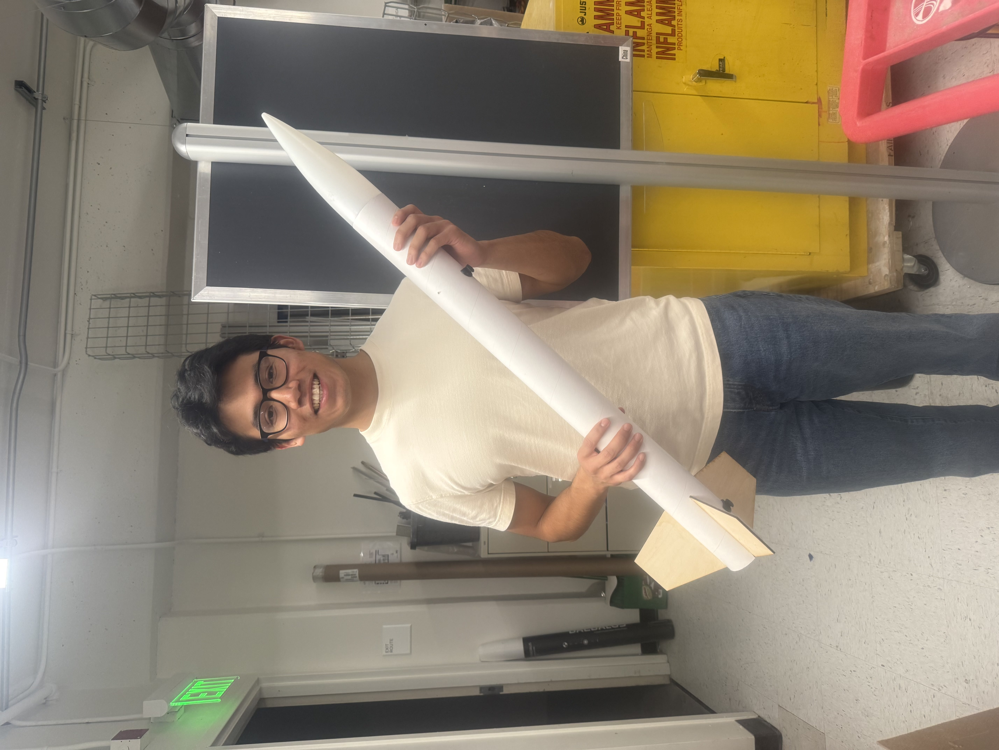

Electrical Engineering — Stanford University
Hi, I’m James.
I am a second-year Electrical Engineering major at Stanford University, with a potential focus on the Hardware and Software track. I have a strong interest in circuitry, particularly in how simple circuits can be expanded and integrated into more complex systems that power the technologies we interact with every day. Through my coursework, I have also seen how computer science concepts intersect with electrical engineering, espically in the classes that I take. I am extremely interested in being a part of a team that develops technological advancements that improve humanity.
Some facts about me are that I was born and raised in Los Angeles, CA. I am the youngest of three siblings to a Guatemalan father and a Mexican mother. Outside of labs and classes, I am huge fanatic of soccer and of Real Madrid and the Lakers, my home team. I am a black belt in Shito-Ryu Karate and have been practicing for over a decade (°O°). Much more recently, I have gotten into running and learning how to play the guitar. Thanks for reading!
View My Projects →